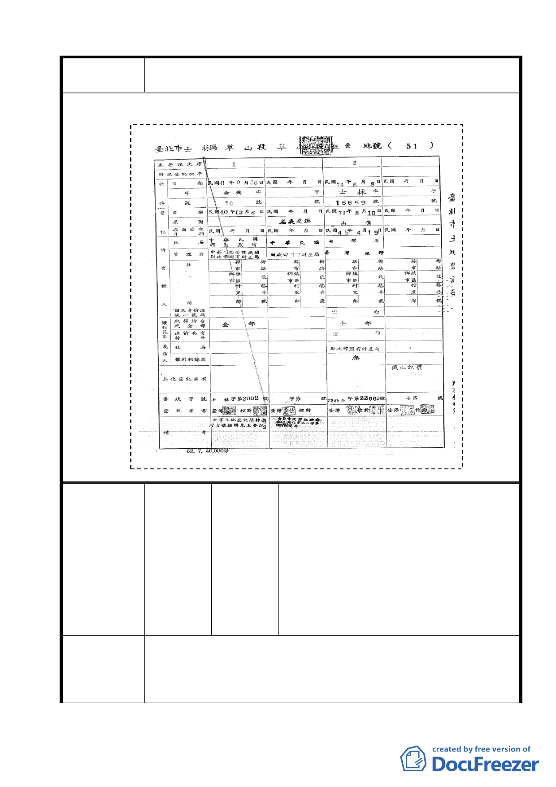

案名
變更臺北市士林區陽明山山仔后地區第二種住宅區為特定住宅區
細部計畫案
編號
陳情理由
黃裕倉、林鼎倫、吳生賢、麥燦文、洪米
貞
山仔后文史工作室、台北市陽明山國家公
園區改造協會（連署人暨單位包括：陽明
11 陳情人 里里長、菁山里里長、平等里里長、公館
里里長、永福里里長、湖田里里長、泉源
里里長、湖山里里長、大屯里里長、中華
民國景觀學會、台北市陽明山溪流資源保
育暨教育協會、泉源社區發展協會）
1.美軍宿舍是冷戰時期的活歷史，應朝全區原貌保留規劃，宿舍
未來可作文史館、圖書館、或出租居住使用等途，但居住其間
的人應肩負導覽在地歷史的義務。
2.目前都市計畫所規劃的公共設施並不符合在地居民的需求，國
36